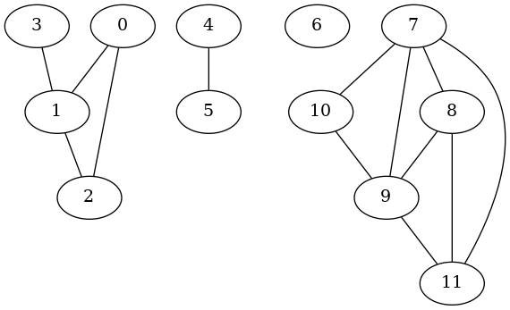
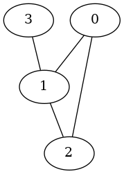
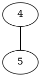
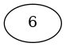
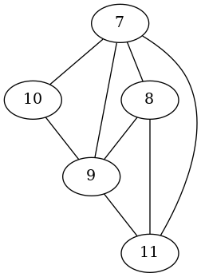
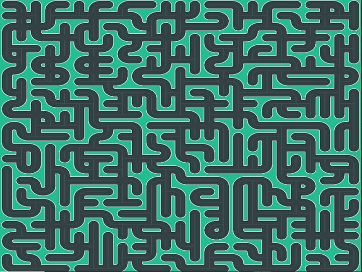

Présentation et objectifs du projet
Ce projet consiste à coder un jeu de labyrinthe en C et SDL. Le projet a duré 2 semaines complètes et a été réalisé en équipe. Le principe du jeu consiste à contrôler Pikachu dans un labyrinthe. Plusieurs Pokeball se rapprochent de lui. L'objectif est de faire exploser toutes les Pokeballs en posant une mine. Si Pikachu est touché par une Pokeball, il perd une vie, s'il est touché par 2 Pokeballs, la partie est perdue.
Les objectifs du projet étaient les suivants :
- Progresser en langage C
- Découvrir la bibliothèque SDL2 pour les rendus graphiques
- Découvrir ou revoir des algorithmes de recherche de chemin
Démonstration
Comportement du jeu en cas de défaite
La vidéo ci-dessous montre une partie perdue où deux Pokeballs touchent Pikachu avant qu'il ne réussisse à faire sauter toutes les Pokeballs sur une mine.
Comportement du jeu en cas de victoire
La vidéo ci-dessous montre une partie gagnée où Pikachu réussit à faire sauter toutes les Pokeballs sur une mine avant d'être touché deux fois.
Bibliothèque SDL2
La SDL (pour Simple DirectMedia Layer) est une bibliothèque logicielle libre, utilisée pour créer des applications multimédias en deux dimensions avec du son comme les jeux vidéo, les démos graphiques, les émulateurs, etc. (extrait de Wikipedia).
Cette bibliothèque permet notamment :
- un affichage de rendus dans des fenêtres
- la gestion du son
- la gestion de périphériques tels que la souris, le clavier ou encore le joystick
Dessiner sur un rendu
La bibliothèque SDL2 permet entre autres de dessiner sur un rendu. Un rendu (ou renderer en anglais) est une zone dans laquelle il sera possible de dessiner ou de poser des images. Grâce à lui, on peut déjà construire quelques animations simples. Pour ma part, j'ai décidé de faire des carrés allant de haut en bas tout en changeant de couleur. Vous pouvez voir ci-dessous le résultat :
Manipuler des textures
Après avoir créer des animations simples, on va pouvoir créer des choses plus belles avec des vraies images. Pour cela, on va utiliser des textures.
On va pouvoir faire plusieurs choses : ajouter un arrière-plan, incruster une image dans un arrière-plan, ou encore faire bouger un personnage issu d'une planche de sprite. Voici une vidéo montrant quelques animations utilisant des textures :
Un premier jeu : le jeu de la vie
Pour appliquer les connaissances précédemment acquises, codons le jeu de la vie. Le jeu de la vie est un jeu de simulation de la vie et mort de plusieurs cellules. Les cellules mortes sont représentées en blanc tandis que les cellules vivantes
sont représentées en noir. Le joueur doit choisir la situation initiale. Si vous ne connaissez pas ce jeu, je vous recommande vivement de regarder cette vidéo.
Ci-dessous mon implémentation du jeu :
Partition
Maintenant que nous avons appris à maîtriser une bibliothèque graphique qui va nous permettre d'ajouter une interface graphique à notre jeu, on doit implémenter un algorithme de recherche de plus court chemin. Cet algorithme permettra aux Pokeball de suivre Pikachu.
Présentation
L'idée derriere la notion de partition est la notion de classification : les éléments d'un ensemble sont regroupés par paquets. Les paquets sont appelés classes. D'un point de vue formel, on impose néanmoins quelques restrictions supplémentaires:
- Aucune classe ne doit être vide, autrement dit toute classe doit contenir au moins un élément.
- L'union de toutes les classes doit être égale à l'ensemble entier ce qui signifie que tout élément de l'ensemble doit appartenir à une classe.
- L'intersection entre deux classes est vide, autrement dit un élément appartient à au plus une classe.
Implémentation
Il existe deux types d'implementation pour ce type de structure :
- l'implémentation par marqueurs
- l'implémentation arborescente
Composantes connexes
Un graphe non orienté est connexe s'il existe toujours un chemin reliant deux nœuds quelconques du graphe. Les composantes connexes d'un graphe est l'ensemble contenant les sous-graphes connexes maximaux au sens de l'inclusion.

Ce graphe possède 4 composantes connexes :|  |  |  |  |
- Créer une partition dont les éléments sont les nœuds,
- Pour chaque arête du graphe, fusionner dans la partition des classes contenant les extrémités de l'arête (ne rien faire s'ils sont déjà dans la même classe),
Arbre couvrant de poids minimal et algorithme de Kruskal
Un arbre est un graphe connexe et sans cycle, ce qui revient à dire que pour deux sommets d'un arbre, il n'existe qu'un seul chemin les reliant. Un arbre couvrant d'un graphe est un arbre qui vérifie que :
- ses nœuds sont les mêmes que ceux du graphe,
- la liste de ses arêtes est extraite de la liste des arêtes du graphe.
Pour déterminer un arbre couvrant est de poids minimal, on va utiliser l'algorithme de Kruskal en se servant du type partition. Pour l'algorithme de Kruskal, on effectue les étapes suivantes :
- Ordonner par ordre croissant de valuation les arêtes (cette étape peut être omise si on ne cherche pas un arbre couvrant de poids minimal),
- Créer une partition dont les éléments sont les nœuds du graphe,
- Créer une liste d'arêtes A, vide,
- Pour chaque arête, si les deux extrémités de l'arête ne sont pas dans la même composante connexe, alors, fusionner les classes auxquelles elles appartiennent et ajouter cette arête à A.
Réalisation du labyrinthe
On cherche à construire un labyrinthe qu'on va implémenté sous forme de graphe. Pour ce faire, on va au préalable mélanger l'ordre des arêtes du graphe (pour ne pas avoir quelque chose de trop ordonné) avant de lui appliquer l'algorithme de Kruskal.
Visualisation du labyrinthe
Après tout ce travail, on va enfin pouvoir visualiser notre labyrinthe grâce à la SDL2. Voici le résultat : 
Un exemple de labyrinthe
Conclusion
Ce projet a permis à mon équipe et à moi d'améliorer mes compétences en C et de découvrir la bibliothèque SDL pour l'affichage graphique. En ajoutant les connaissances sur les graphes et l'implémentation d'algorithmes de recherche de chemin, tout ce travail nous a permis d'implémenter un petit jeu sur le thème du labyrinthe.